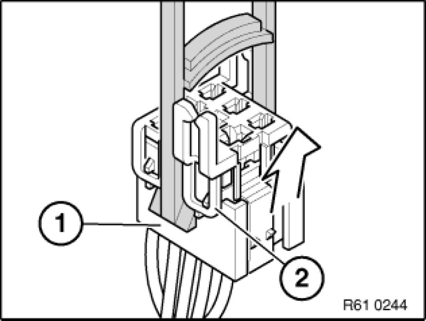
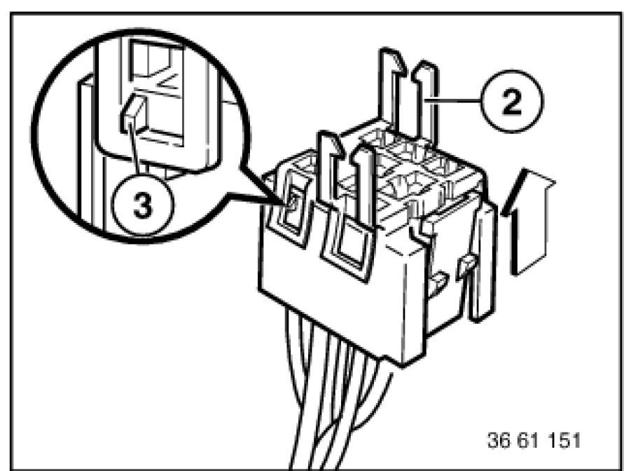
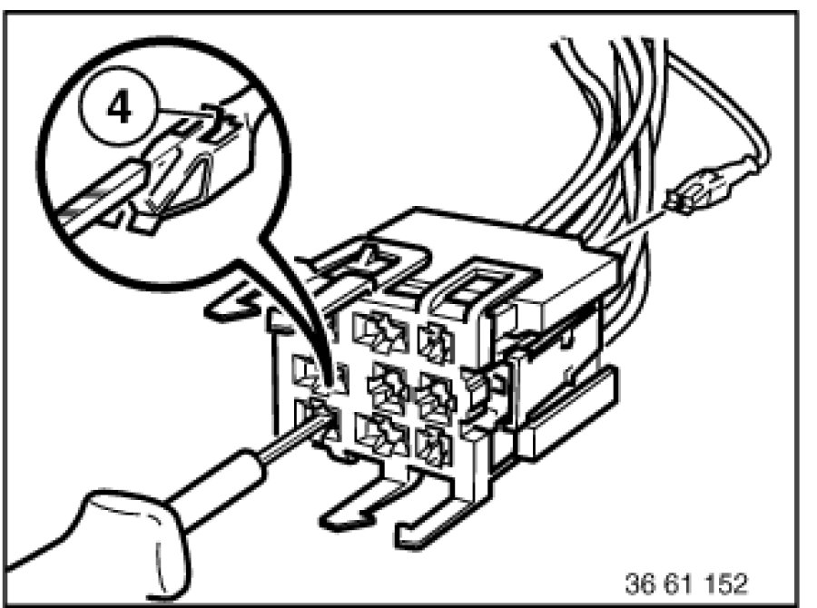

Relay Box: Service and Repair
61 13 ... - Relay carrier

Place special tool 61 1 153 on relay carrier (1) and carefully pull in direction of arrow until retaining lugs (2) on relay carrier are raised.

Pull relay carrier (2) in direction of arrow into first catch (3).

Press down arrester hook (4) of appropriate contact and pull out cable with contact.
Press out double flat spring contact with special tool 61 1 136 or 61 1 137 (ejector).